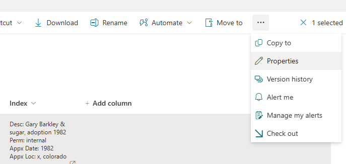

How does the indexing and tagging work?
In digital archive systems, indexing and tagging are two critical processes used to organize, categorize, and efficiently retrieve stored materials.
Indexing involves creating structured entries that describe and reference each digital item within the archive. These entries typically include key details such as title, date, creator, subject, file type, and other relevant metadata. A well-designed index allows users to quickly search for and locate specific items based on defined attributes, much like a library catalog.
Tagging, by contrast, involves assigning keywords or descriptive labels to digital items. Tags are often less formal than index entries and provide greater flexibility by capturing a wide range of topics, themes, or characteristics that may not fit into a rigid structure. Tagging enhances searchability by enabling users to find materials through intuitive or thematic associations rather than strict classifications.
Together, indexing and tagging significantly improve the discoverability, accessibility, and long-term management of digital collections, ensuring that valuable historical, organizational, and creative content can be easily preserved and referenced over time.
Use of Indexing and Tagging in the Archive's SharePoint Library
Both indexing and tagging are actively used in the Archive’s SharePoint library. When viewing files within a folder, indexing information is displayed as a column. In cases where the indexed metadata is too extensive to display, a full view can be accessed by selecting the file, clicking the three dots "..." in the top right corner, and choosing Properties (see Figure 1).
Note: The primary purpose of indexing is to enable searchability. The main search bar at the top of the SharePoint library searches recursively from the current directory.
- To search the entire library, begin your search from the homepage.
- To search within a specific folder, navigate to that folder before using the search bar.
The metadata used for indexing photographs includes the following fields:
- Description (Desc)
- Permission (Perm)
- Approximate Date (Appx Date)
- Approximate Location (Appx Loc)
- Department (Dept)
Important The Permission (Perm) field indicates the confidentiality level of the item:
- Public and Internal items can generally be used for marketing purposes, with Internal materials requiring senior leadership approval.
- Restricted items are stored in a separate, highly secure folder. These materials may be sensitive, graphic, or otherwise not suitable for broad internal or public access. Only specific individuals and departments are granted access. Information in the restricted folder is highly confidential and must not be copied or stored outside the original restricted SharePoint folder. Despite the sensitive nature of restricted content, it is preserved to ensure an accurate and complete representation of HSPPR’s history.
Tagging for Filtering
Tags are used to filter content within folders. When browsing a folder, an additional Tags column is available. To filter by tag(s), click the funnel icon in the top right corner (see Figure 2), then select one or more tags to narrow down the file view.
Note: Unlike indexed metadata, tags are not searchable using the top search bar. Tags should be treated strictly as a filtering tool for navigating large collections within a folder.
Additional Resources
If, after reviewing the "About" page, you still have questions about using the Archive or would like to share any feedback or suggestions, please contact Nathan Garcia at ngarcia@hsppr.org or via Teams. We hope you enjoy exploring the Archive and discovering HSPPR’s incredible history!